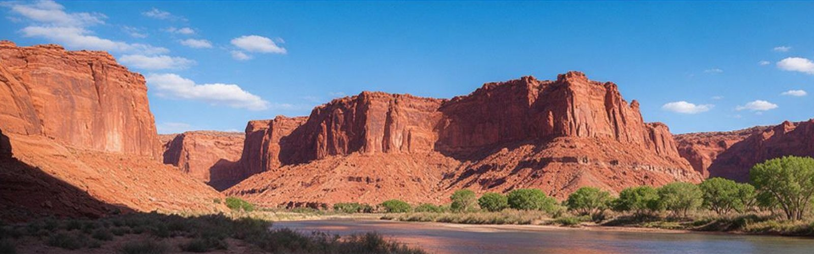
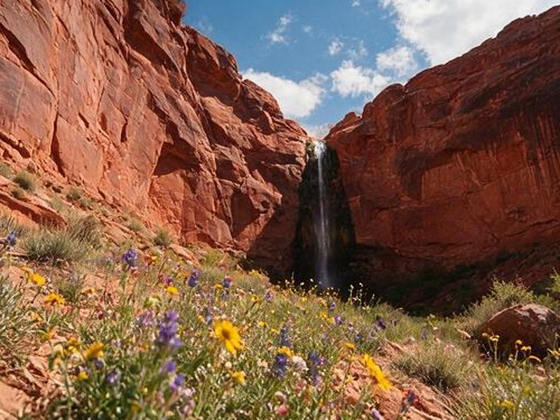
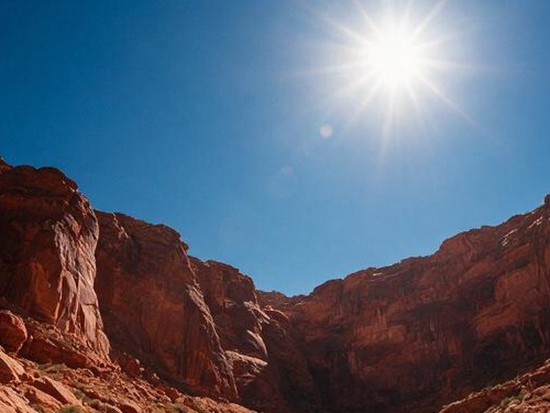
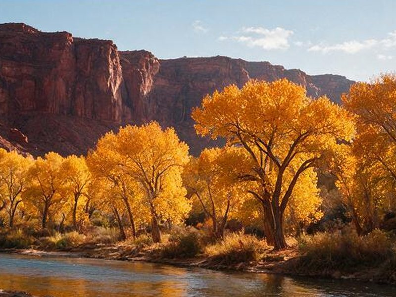
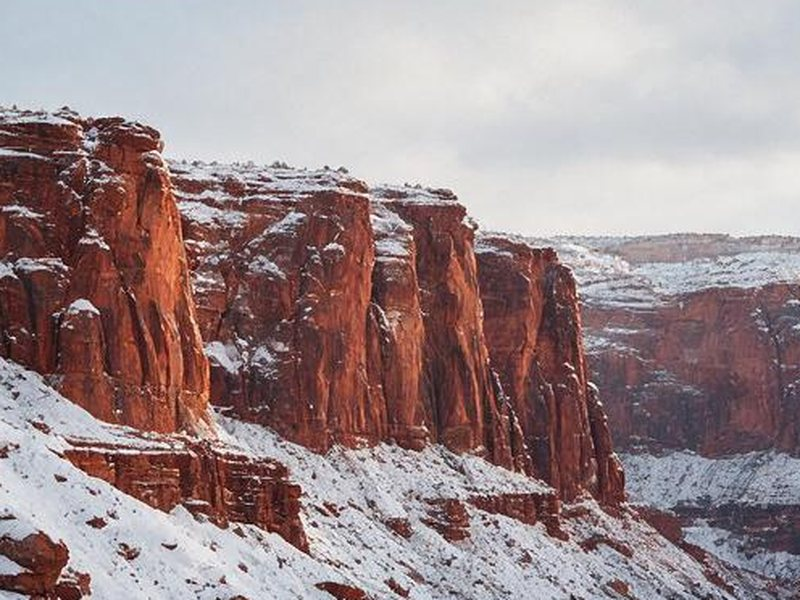

When to visit Zion
Every season changes what you can do and how crowded the park feels.

Spring
March to May
Waterfalls run after snowmelt and desert wildflowers bloom. Days are mild and nights are cool, but weather can swing fast. High river flow from snowmelt can close The Narrows.
- Best for: waterfalls, Riverside Walk, wildflowers
- Watch for: crowds during spring break weeks and very cold river water

Summer
June to August
Canyon temperatures often pass 100°F. Start hikes at dawn, carry more water than you expect, and save The Narrows for the hottest part of the day. Monsoon storms from July into September bring flash flood risk.
- Best for: early starts, The Narrows when it is open, the cooler higher elevations of Kolob Canyons
- Watch for: heat illness, flash floods, and full shuttles

Fall
September to November
Heat eases through September. Cottonwood trees along the river turn gold from late October into November. It is a favorite season, so book lodging early.
- Best for: all-day hikes and photography
- Watch for: busy weekends and shorter days

Winter
December to February
Trails are quiet and nights are cold, with occasional snow on the rim. Shaded sections can ice over, and some higher routes may not be passable. Lodging is easier to find.
- Best for: solitude and short walks like Riverside Walk
- Watch for: ice, short days, and a river too cold for The Narrows without specialized gear
Flash floods can happen under clear skies. Storms miles away can send water through narrow canyons within minutes. Check the forecast and the ranger's flash flood rating before you enter The Narrows or any slot canyon.
Not sure which dates to pick?
Tell us when you can travel and what you want to do. We can point you toward the right season and the lodging or tour providers that fit.
Get help choosing dates